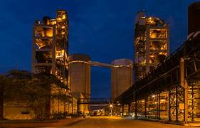

Beauty of Ariyalur
CEMENT FACTORY

The third cement plant of TANCEM commenced its operation in 2019. It is a most modern 1 million ton per annum plant of state-of-the-art technology and installed with advanced equipment such as pre calciner, crossbar cooler, VRM for raw grinding as well as coal grinding. It has a modern laboratory to ensure consistent quality of cement. It manufactures OPC 43 Grade & PPC under ARASU and VALIMAI brands.
The Ariyalur Cement Works is primarily supplying cement to Government departments. It has a wide network of stockists for open market sales and is selling cement in the central and northern districts of Tamil Nadu and Northern districts of Kerala.